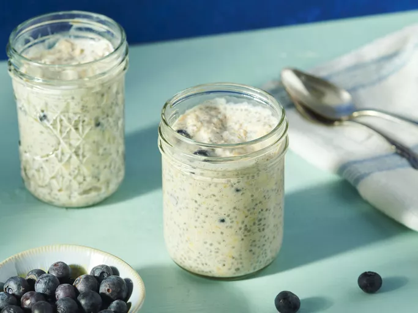

About
Healthy and Tasty sounds like opposite sides of river right ?
well now they will not. with this amazing recipe which is quick, tasty, and of course Healthy
Ingredients
- ⅓ cup milk
- ¼ cup Greek yogurt
- ¼ cup rolled oats
- 2 teaspoons honey
- 2 teaspoons chia seeds
- ¼ teaspoon ground cinnamon or more to taste
- ¼ cup fresh blueberries
Steps
- Combine milk, yogurt, oats, honey, chia seeds, and cinnamon in a 1/2-pint jar with a lid; cover and shake until combined.
- Fold in blueberries.
- Cover and refrigerate, 8 hours to overnight. Enjoy!